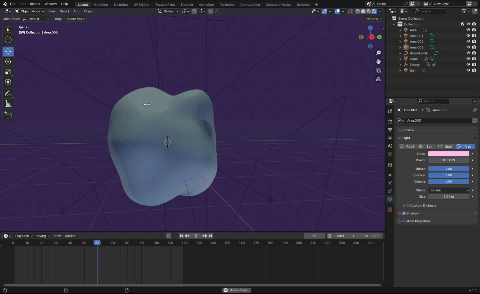

Blog 10 | Refinement and testing of AR prototype
Design 302 | Date: 01/10/24 (Tuesday)
Within this blog post, I will reflect on the progress, testing and continuation of my AR prototype. Looking into the second refinement of the AR prototype, game engines and how I planned and what I did for the Web AR.
Figure 1.
The second rendition of my prototype.

Note. A GIF of the 3D model and animation made for the second prototype of the project created in Blender. It was screen-recorded from the program.
What?
I tested out my first prototype, looking into aesthetics, look and feel, and functionality. Finding that the first prototype was very rough in terms of its aesthetics, but functionality-wise, it was somewhat working as intended, mostly testing the timing of the product, if it was too fast or too slow and if users understood what they were meant to do. From this, I then looked into creating my second prototype, focusing on its looks and making it fit with the aesthetics of the project, something cleaner and modern.
I also created my second prototype with displacements and a smoother animation, making it feel more like a blob in which the user follows the breathing patterns. However, I encountered a technical problem when importing 3D files and animations, as displacements and material animation cannot be exported. I found that alembic (.abc) files could export this information. However, I would need to use a game engine for this. As I started to test creating WebAR on Unity, I found that many SDKs would be paid/subscription-based. As well as, there weren't many Web AR resources for plane tracking that I wanted or wouldnt support the second prototype of my project, as they wouldnt support alembic files as well.
So what?
From this, I was able to test and add to my first prototype, looking into improving its functionality and aesthetics. However, as I started on my second prototype, I encountered many issues. There are issues in figuring out what can be exported and imported, how to create a WebAR within Unity, and such. Due to the lack of testing with these technologies earlier, I now have a render that could be used for hero shots and concepts. However, this 3D animation and model wouldnt be usable as I found that from these issues, I would need to change how I created my 3D model and animations. By changing these, I would be able to look into using WebAR within Unity. Had I done testing using albemic files and webAR within Unity before, this wouldnt have come across as negative of a crossroad as it is at this moment. Saving me time from the 3D model and animation of my second rendition.
I had also talked with experts about my project and found that they had known of the experts being an issue, as such, having talked with the experts earlier about my plan could helped me with my progress in my project.
Now what?
From now I will have to look within WebAR and what it can do, understand and create a 3D model and animation that can be supported. I could also look into finding different methods of implementing my AR aspect. I have also learnt that prototyping is very important, as I am able to learn from previous iterations and improve on them. It also helps serve as a foundation for learning new techniques and such without having to waste much time. As such, I will ensure that as I test new things, I will keep with the low-fidelity testing, progressing slowly over time in the updates of my prototypes.
References
J, D. (1994). Reflective practice for practise. PubMed, 14(1), 47–50.
https://pubmed.ncbi.nlm.nih.gov/8303152
Rolfe, G., Freshwater, D., & Jasper, M. (2001). Critical Reflection for Nursing and the Helping Professions: A User’s Guide. Palgrave MacMillan.
What? So what? Now what? (2020, January 30). The University of Edinburgh.
https://www.ed.ac.uk/reflection/reflectors-toolkit/reflecting-on-experience/what-so-what-now-what